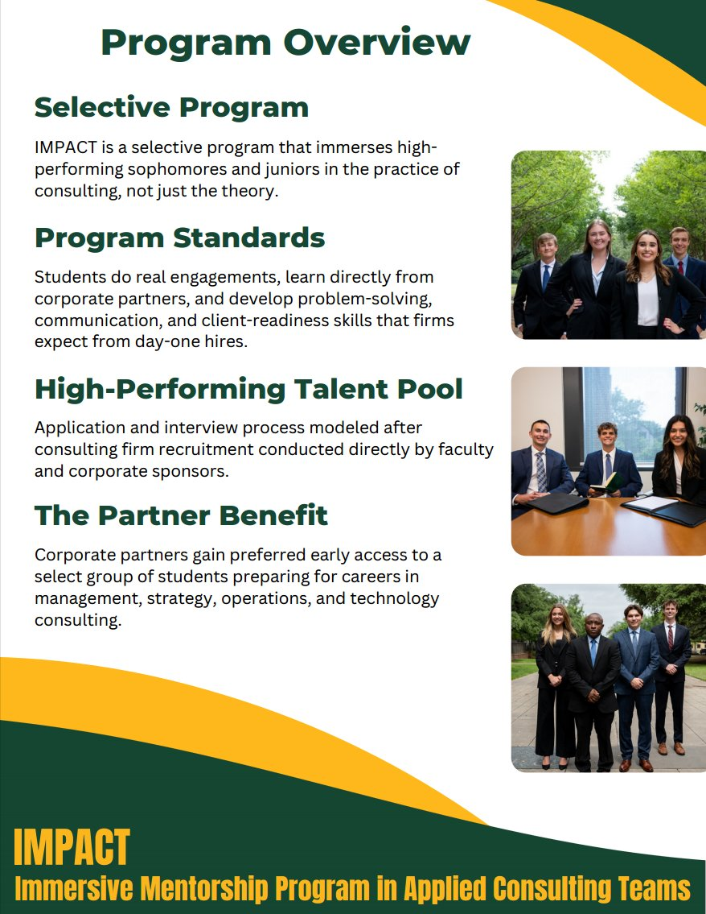
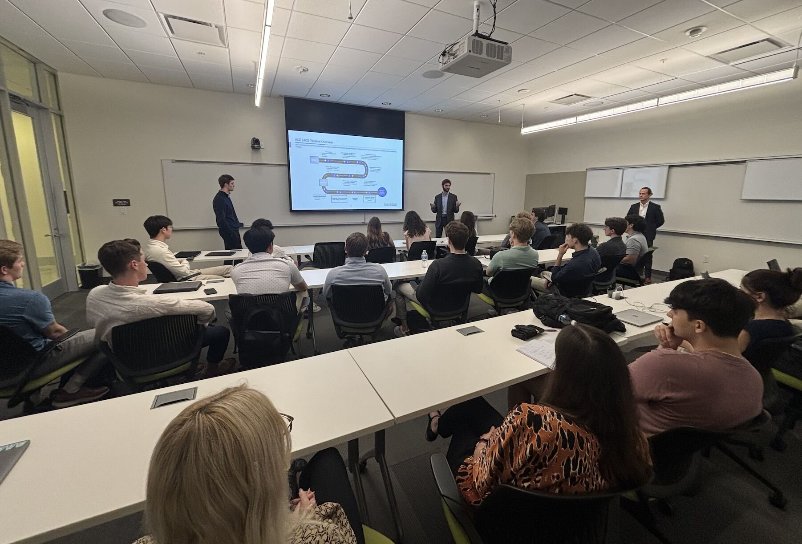
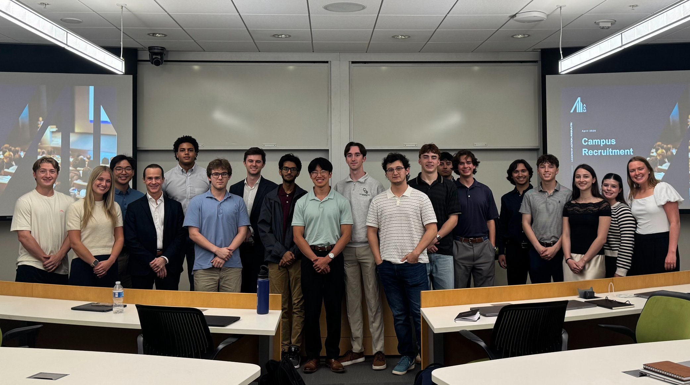
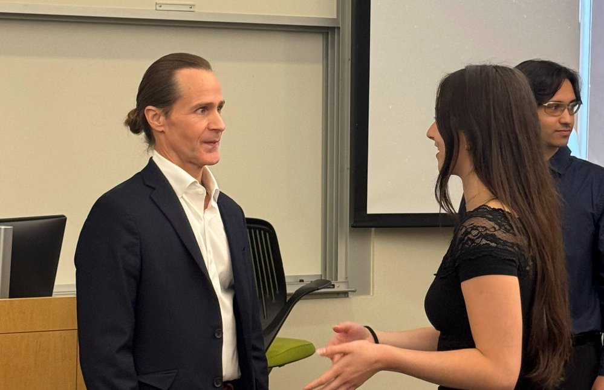
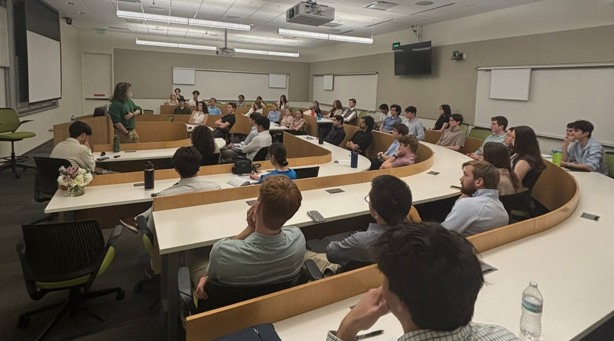

Baylor Hankamer School of Business
Immersive Mentorship Program in Applied Consulting Teams
A selective consulting development program that puts you inside real engagements, connects you with industry leaders, and prepares you for top consulting firms — starting sophomore year.
IMPACT is Baylor's most intensive undergraduate consulting development track — built for students who want real preparation, not just exposure.
Most students enter consulting recruiting without ever working on a real engagement or speaking to an industry professional. IMPACT changes that. You'll join an applied program that combines classroom training, live consulting projects, direct mentorship from executives, company site visits, and structured recruiting preparation — all woven together into one cohesive experience.
IMPACT is selective. Students apply through a process modeled after consulting firm recruitment. Those selected receive a $1,000 scholarship and access to a network of corporate partners who mentor, coach, and recruit from the program.
IMPACT and CGB go together. Membership in The Consulting Group at Baylor is a required component of IMPACT. IMPACT is the structured track; CGB is the community where you apply and sharpen what you learn.

Four interconnected pillars that turn you into a consulting-ready professional before recruiting even begins.

MGT 3355 & MGT 4355
The academic backbone of IMPACT. MGT 3355 mirrors the onboarding training new consultants receive at top firms, while MGT 4355 puts those skills to work on real client engagements judged by industry executives.

2+ Consulting Projects
Complete at least two live consulting engagements with local and regional organizations. Solve real business problems, manage deliverables, and present results to professionals — not just professors.

Industry Mentor Relationships
Get paired with professionals from IMPACT's corporate partner network who coach you through the program. Build real relationships with executives before formal recruiting opens — a head start no resume can replicate.

Recruiting Prep · Casing Workshops · Office Visits
Active membership in The Consulting Group at Baylor is the fourth required pillar. Weekly casing workshops, company office visits, and structured recruiting preparation mean you're building relationships and sharpening skills all year long.
IMPACT is built around two Hankamer management courses that give you both the theory and the application of consulting.
MGT 3355 is the entry point of the IMPACT academic sequence — consulting boot camp, deliberately designed to mirror the onboarding training new associates receive at top firms. You'll develop the structured frameworks and analytical habits every great consultant relies on.
MGT 4355 is where the skills you've built get tested under real conditions. Student teams take on actual engagements with local and regional organizations, guided by industry mentors and judged by executives. The course emphasizes critical analysis, identifying root causes, developing creative solutions, and presenting to real stakeholders.
IMPACT is built around five core competencies that leading consulting firms look for in new hires — and that you'll demonstrate through every component of the program.
IMPACT spans one full year, beginning with applications in your freshman spring and running through the end of your sophomore year.
The application window opens during the spring semester of your freshman year. We encourage students to apply early — it gives you the most time to prepare and puts you first in the queue.
The application window closes in October of your sophomore year. The process is modeled after consulting firm recruitment and is conducted by faculty and corporate partners.
Finalists complete a structured case interview — consistent with how top consulting firms evaluate candidates. IMPACT provides prep resources to help you get ready before this stage.
Accepted students receive their offer and are notified of their $1,000 scholarship. Onboarding details for the spring semester are shared shortly after.
IMPACT officially kicks off in January. You'll enroll in MGT 3355, join The Consulting Group at Baylor, and begin meeting your industry mentor and corporate partners.
Enroll in MGT 4355, take on a live consulting engagement, complete at least two projects, and attend company site visits. A formal project competition judged by industry executives caps the semester.
By December, you'll have completed both courses, two or more real consulting projects, and a full year of recruiting preparation — ready to compete for top consulting internships with confidence.
IMPACT is designed for students who are serious about consulting and want a more structured path into the field — starting early.
You're a freshman or sophomore curious about strategy, operations, or management consulting and want to see what it's actually like.
You want to get ahead — spending sophomore year building real skills rather than waiting for junior-year recruiting to start preparing.
You enjoy breaking down complex problems, organizing your thoughts, and communicating clearly under pressure.
You see the value in learning from professionals and are ready to build real mentorship relationships with industry executives.
You thrive in collaborative environments and bring energy and accountability to every team you're part of.
You understand IMPACT is a full-year commitment combining coursework, CGB involvement, and active program participation.
Applications are open from freshman spring through October of your sophomore year. Take the next step toward a consulting career built on real experience, real relationships, and real results.